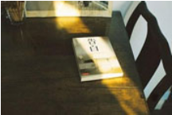

首页>网站模板
首页>网站模板
CEO优化
Web前端
程序人生
网络营销
-
前端构建工具之“Webpack”
 王会丽发布时间：2013:05:14 12:00:00分类：学无止境
王会丽发布时间：2013:05:14 12:00:00分类：学无止境还记得刚接触前端的时候，对于“前端构建工具”这个词一脸茫然。并不知道使用它，能为我们做些什么事情。以及它能帮我们，解决什么样的问题？
- 
-
一个前端的自我修养（转）
王会丽发布时间：2013:05:14 12:00:00分类：学无止境很多人都有这样的感觉：听了很多技术圈子的分享，有的有深度、有的循循善诱、深入浅出。但是呢！几年下来，到底哪些用上了，哪些对自己真的有帮助了？反而有些模糊。
-
dede5.7-修改自定义表单返回成功页面
王会丽发布时间：2013:05:14 12:00:00分类：学无止境最近刚好帮客户做一个网站，需要用到dede的自定义表单功能。可是有个这样的需求，就是当表单提交成功后，要返回一个自定义页面的提示功能!可能是觉得dede自带的提示太low的原因吧!(一不小心又黑了下)
-
dedecms5.7安装百度(ueditor)编辑器的方法
王会丽发布时间：2013:05:14 12:00:00分类：学无止境用过dedecms的朋友都知道dede自带的文本编辑器很不好用，且有些功能还需要我们自己手动去修改源码，才能完成我们想要的效果。现在广大用dedecms的朋友们，你们有福啦！
-
webapp移动端适配方案之“手淘框架flexible”
王会丽发布时间：2013:05:14 12:00:00分类：学无止境这篇文章,本来准备在去年年底的时候,分享给大家的。可由于年末工作比较忙的原因,再加上自己的一些情况,就一直拖到现在才开始写。
-
javascript与jQuery的那些事
王会丽发布时间：2013:05:14 12:00:00分类：学无止境今天在找资料的时候,发现了一篇关于“javascript与jQuery”文章。讲得还不错,拿来给大家一起分享下:
关于我
视频教程
SEO优化
留言板
您也想创建一个博客吗？
你是否也想打造一个在互联网上的个人品牌，成为一个家喻户晓的人物呢？
请点击了解 怎样创建个人博客